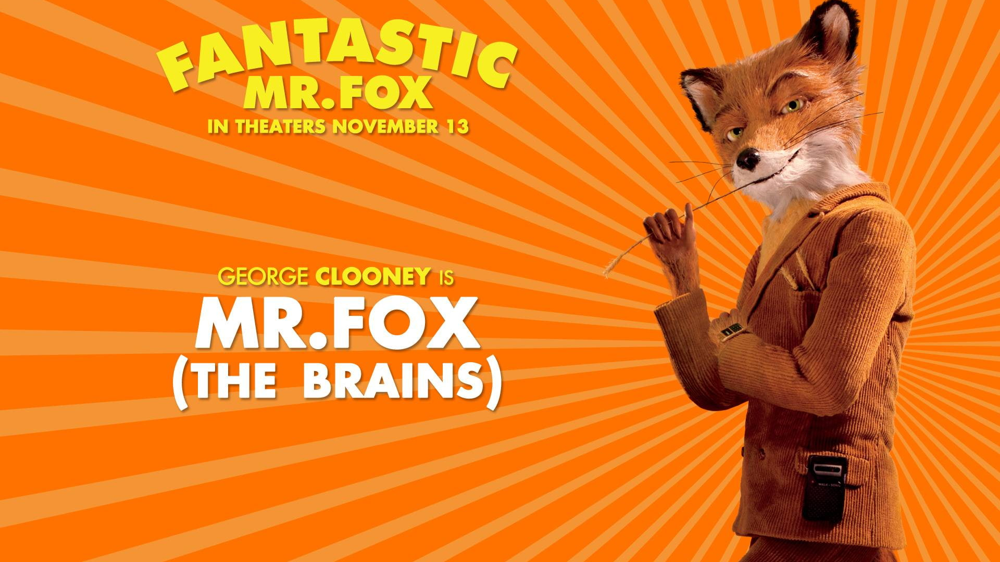

Tabla de BOOTSTRAP
Mi top 3 peliculas favoritas
| # | Nombre | Director | Año de estreno |
|---|---|---|---|
| 1 | Fantastic Mr. Fox | Wes Anderson | 2009 |
| 2 | Drive | Nicolas Winding Refn | 2011 |
| 3 | Blade Runner 2049 | Denis Villeneuve | 2017 |
Acordion
Resumenes de las peliculas
(Tuve que usar el center ya que GitHub Page no leia el estilo para centrarlo)
Tras doce años de idílica existencia, el señor Fox rompe la promesa que le había hecho a su mujer y comienza a saquear las granjas sus vecinos humanos, Boggis, Bunce y Bean. Rendirse a sus instintos animales no sólo hace peligrar su matrimonio, sino que también pone en peligro la vida de su familia y de sus amigos animales.
Un misterioso conductor especialista de cine y mecánico en un taller, por la noche se convierte en un talentoso chófer para delincuentes. Su jefe, Shannon le busca trabajos en películas de Hollywood o fugas para criminales. Sin embargo, su mundo cambia cuando conoce a Irene, una madre solitaria que tiene al marido en la cárcel, y se ve enredado en un robo que involucra a la alta esfera de la mafia.
Tras la rebelión de los replicantes creados por bioingeniería para ser utilizados como mano de obra esclava y la prohibición a Tyrell Corporation de seguir con su fabricación, el empresario Niander Wallace adquirió lo que quedaba de Tyrell Corp. y creó una nueva línea de replicantes mucho más obedientes. Ahora, en el año 2049, los viejos modelos Nexus 8 que continúan con vida están siendo retirados. Los que les persiguen aún reciben el nombre de Blade Runner.
Carrucel
Imagenes de las peliculas
